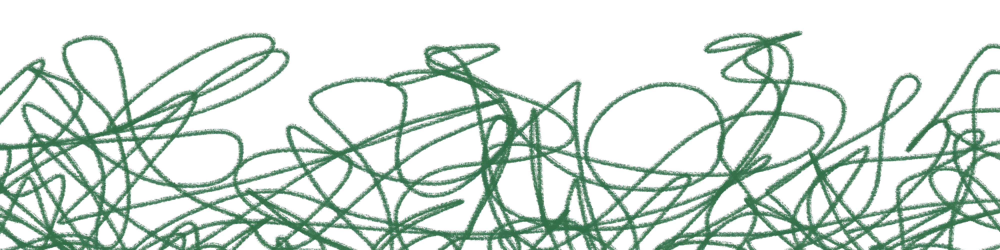

Úgy érzed, mintha eltávolodtál volna másoktól, vagy mintha ők távolodtak volna el tőled. Hiányzik a valódi közelség, a biztos kapcsolódás, és egyre nehezebb elhinni, hogy tartósan számíthatsz valakire.
Lapozz a X. oldalra és a felbukkanó lehetőségek közül válassz egyet!
